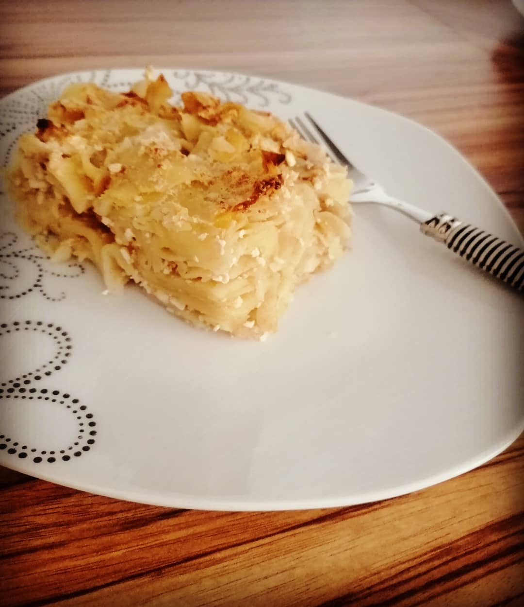

Rezancový nákyp podľa @handmade_viki — Normy Jedál
Naše dnešné sladké raňajky 😋
Keď vstávate skoro🤷♀️, stihnete aj takýto jednoduchý recept na rezancový nákyp s tvarohom😆
Uvaríme 300g širokých rezancov(1balíček),
pridáme trochu masla,
1 balíček vanilkového cukru,
škoricu a cukor alebo iné sladidlo podľa chuti,
2 žĺtka,
1 hrudkovitý tvaroh,
1 mäkký tvaroh,
2 nastrúhané jabĺčka
a nakoniec sneh z bielkov.
Dáme do zapekacej misy a upečieme do zlatisla.
Dobrú chuť😋💗
#rezancovynakyp #recepty #recept #receptystvarohom #foodblog #sladkyrecept #sladkamnamkaprecelurodinu #zapekanecestoviny #ajnaranajky #ajnaveceru